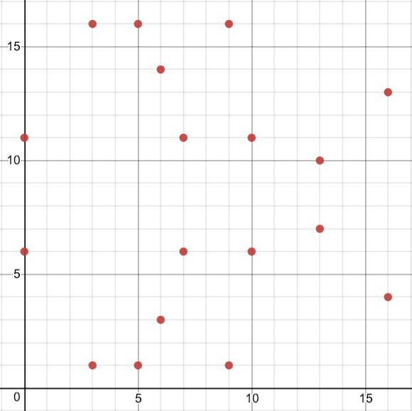

<!doctype html>
<html lang="en">
    <head>
        <meta charset="utf-8">
        <title>RevealJS : /Users/dteiml/dev/presentations/cryptography-in-ethereum/slides.md</title>
        <link rel="stylesheet" href="css/reveal.css">
        <link rel="stylesheet" href="css/theme/league.css" id="theme">
        
       
        <!-- For syntax highlighting -->
        <link rel="stylesheet" href="lib/css/none.css">

        

        <!-- If the query includes 'print-pdf', use the PDF print sheet -->
        <script>
          document.write( '<link rel="stylesheet" href="css/print/' + ( window.location.search.match( /print-pdf/gi ) ? 'pdf' : 'paper' ) + '.css" type="text/css" media="print">' );
        </script>

        <style type="text/css">
            @page {    
              margin: 0;
              size: auto; 
            }
        </style>

        <script>
         if(window.location.search.match( /print-pdf-now/gi )) {
           window.print();
         }
      </script>

    </head>
    <body>

        <div class="reveal">
            <div class="slides"><section  data-markdown><script type="text/template">
## Cryptography in Ethereum

<small>

Dominik Teiml

dominik@gnosis.pm

[dteiml.github.io/presentations](dteiml.github.io/presentations) --> Cryptography in Ethereum

</small>
</script></section><section  data-markdown><script type="text/template">
## Outline:

- RSA
  - Encryption
- Discrete Log Problem
- Diffie-Helmann Key Exchange
- ECC
- ECDSA
- secp256k1
- ECC in Ethereum
</script></section><section ><section data-markdown><script type="text/template">
## Public key cryptography
</script></section><section data-markdown><script type="text/template">
Symmetric cryptography:
- both sender and receiver must have same key

<!-- Now that poses a huge risk, because it means -->
<!-- Especially  -->
</script></section><section data-markdown><script type="text/template">
Can we do better?

- Decryption
    - public
    - private
- Encryption
    - public
    - private

$\Rightarrow$ assymetric, or public key, cryptography
</script></section><section data-markdown><script type="text/template">
One-way fns
- easy to compute in one direction, hard to compute in opposite direction
- hash fns, trapdoor fns

Trapdoor fns
- easy to compute in one way, hard to compute in the opposite *without* special information
- e.g. prime factorization of numbers
</script></section></section><section ><section data-markdown><script type="text/template">
## RSA
</script></section><section data-markdown><script type="text/template">
1. Pick large primes $p,q$
2. Compute $n=pq$
3. Compute $\phi (n) = (p-1)(q-1)$
4. Choose $e,d$ s.t.

    $1 \leq e,d < \phi(n)$

    $ed\equiv 1 \mod \phi (n)$
</script></section><section data-markdown><script type="text/template">
Encryption:

$x^e \equiv y \mod n$

Decryption:

$y^d \equiv x^{ed} \equiv x^{h\phi(n) + 1} \equiv x \mod n$ 
</script></section><section data-markdown><script type="text/template">
Lemma:

Let $n$ be a product of distinct primes. <br> Then $x^{h\phi (n) + 1} \equiv x \mod n$.

Proof:
<br> Let $p \mid n$.
<br> Case 1: $p \nmid x$. Then $x^{\phi (p)} \equiv 1 \Rightarrow x^{h\phi (n) + 1} \equiv x$.
<br> Case 2: $p \mid x$. Then $x^{h\phi(n) + 1} \equiv x$.
Thus by CRT, $x^{h\phi (n) + 1} \equiv x \mod n$.
</script></section><section data-markdown><script type="text/template">
Attacks:

- factor $n$
- find $\phi(n)$ without factoring $n$
- find $x$ without knowing $\phi(n)$
</script></section><section data-markdown><script type="text/template">
<small>

| Algorithm family      | Cryptosystem | Security | level | (bit) |
| --------------------- | ------------ | -------- | ----- | ----- |
| Symmetric key         | AES          | 80       | 128   | 256   |
| Integer factorization | RSA          | 1024     | 3072  | 15360 |

</small>

due to algorithm general number field sieve (GNFS)
</script></section><section data-markdown><script type="text/template">
Can we do better?
</script></section></section><section ><section data-markdown><script type="text/template">
## Discrete Log Problem
</script></section><section data-markdown><script type="text/template">
Let $(\mathcal{G}, \circ)$ by a cyclic group with $|\mathcal{G}| = n$. 
<br> Let $\alpha$ be a primitive element and $\beta \in \mathcal{G}$. 
<br> Find $x$ s.t. $\underbrace{\alpha \, \circ \, ... \circ \, \alpha}_{x \text{ times}} = \beta$.
</script></section><section data-markdown><script type="text/template">
Let's try $(\mathbb{Z}_p, +)$. Then we have a $ \alpha x \equiv \beta \mod p$.

Attack: Find $x'$ s.t. $\alpha x' \equiv 1 \mod p$. 
<br> Set $x=\beta x'$.

Both of these can be solved in quadratic time to the size of $p$.
</script></section><section data-markdown><script type="text/template">
How about $(\mathbb{Z}_p^{*}, \times)$. Then we have $ \alpha ^ x \equiv \beta \mod p$

E.g. Find $x$ s.t. $8^x \equiv 5 \mod 19$.
</script></section></section><section ><section data-markdown><script type="text/template">
## Diffie-Hellman Key Exchange
</script></section><section data-markdown><script type="text/template">
Let $p, \alpha$ be public.
<br> Alice chooses $a$, Bob $b$.
<br> $A := \alpha ^ a \mod p$
<br> $B := \alpha ^ b \mod p$
<br> Both get $K_{AB} = \alpha ^ {ab} \mod p$
</script></section><section data-markdown><script type="text/template">
Discrete Log in $\mathbb{Z}_p^*$
- Hard problem
- Unfortunately, there exist attacks
  - square-and-multiply method
  - index-calculus
</script></section><section data-markdown><script type="text/template">
<small>

| Algorithm family        | Cryptosystem | Security | level | (bit) |
| ----------------------- | ------------ | -------- | ----- | ----- |
| Symmetric key           | AES          | 80       | 128   | 256   |
| Integer factorization   | RSA          | 1024     | 3072  | 15360 |
| Discrete log in $Z_p^*$ | DSA          | 1024     | 3072  | 15360 |

</small>
</script></section><section data-markdown><script type="text/template">
Can we do better?
</script></section></section><section ><section data-markdown><script type="text/template">
## Elliptic curve cryptography
</script></section><section data-markdown><script type="text/template">
An elliptic curve is a curve defined by equation $y^2 = x^3 + ax + b$ that is non-singular (i.e. $\Delta \neq 0$)

If we define an additional "point at infinity", $\infty$, we get an (infinite) group

Group operation (called "point addition") is the reflection in the $x$-axis of the intersection of the line between two points and the curve.
</script></section><section data-markdown><script type="text/template">
$A+B+A+A = 3A + B$


<!-- This is a geometric look, it is easy to get an equivalent algebraic definition -->
<!-- Using that we can easily verify that the structure is a group -->
</script></section><section data-markdown><script type="text/template">
Have gotten a lot of attention in modern mathematics:

- used for factoring integers
<!-- Lenstra elliptic curve factorization -->
<!-- Third fastest factorization method -->
- used by Andrew Wiles to prove Fermat's Last Theorem
- used in crypto
</script></section><section data-markdown><script type="text/template">
<!-- In cryptography, an elliptic curve is a set of points satisfying -->
Set of points satisfying 
<br> $y^2 = x^3 + ax + b$ over a finite field,
<!-- which is usually a prime-order field -->
<br> together with $\infty$

<!-- Geometric interpretation won't help us now -->

We use same formulas as EC's over real numbers
</script></section><section data-markdown><script type="text/template">
<!-- These EC's look very different. Here's an example of the curve -->

$y^2 \equiv x^3+2x+2 \mod 17$


</script></section><section data-markdown><script type="text/template">
Domain parameters

$y^2 \equiv x^3 + ax + b mod p$

Need: $p,a,b,G,n$.
Also "cofactor", $h=\frac{1}{n}|E(\mathbb{Z}_p)| $

Together, $(p,a,b,G,n,h)$ are called the "domain parameters"
</script></section><section data-markdown><script type="text/template">
<!-- This is where things get tricky -->
Computing $n$ is quite difficult $\rightarrow$ standard (named) curves are used.

There is suspicion that curves published by NSA include backdoors.

<!-- Dual_EC_DRBG, a NIST-recommended cryptographic pseudo-random bit generator, came under criticism in 2007 because constants recommended for use in the algorithm could have been selected in a way that would permit their author to predict future outputs given a sample of past generated values.[1] In September 2013 The New York Times wrote that "internal memos leaked by a former N.S.A. contractor, Edward Snowden, suggest that the N.S.A. generated one of the random number generators used in a 2006 N.I.S.T. standard—called the Dual EC DRBG standard—which contains a back door for the N.S.A."[11] -->
<!-- P curves are standardized by NIST for elliptic curve cryptography. The coefficients in these curves are generated by hashing unexplained random seeds, such as:
P-224: bd713447 99d5c7fc dc45b59f a3b9ab8f 6a948bc5.
P-256: c49d3608 86e70493 6a6678e1 139d26b7 819f7e90.
P-384: a335926a a319a27a 1d00896a 6773a482 7acdac73.
 -->
 <!-- my experience, talking with some professional cryptographers, suggest that they believe NSA inserts backdoors into its algorithms -->
</script></section><section data-markdown><script type="text/template">
Meta: EC DLP is isomorphic to DLP in $Z_p^*$.
<br> Then why do we use EC?
</script></section><section data-markdown><script type="text/template">
<!-- Short answer is -->
Isomorphisms don't capture computing costs.

For a generic cyclic group, Pollard's rho algorithm calculates log in $\sqrt{n}$.
<!-- And we also have a proof that no faster algorithm on generic groups exists -->

<!-- But the problem is, -->
There exist faster algorithms on specific groups
<!-- as we saw above -->

Currently, no faster algorithm exists to solve log on generic EC's.

Some EC's have fast log algs
</script></section><section data-markdown><script type="text/template">
<small>

| Algorithm family        | Cryptosystem | Security | level | (bit) |
| ----------------------- | ------------ | -------- | ----- | ----- |
| Symmetric key           | AES          | 80       | 128   | 256   |
| Integer factorization   | RSA          | 1024     | 3072  | 15360 |
| Discrete log in $Z_p^*$ | DSA          | 1024     | 3072  | 15360 |
| Elliptic curves         | ECDSA        | 160      | 256   | 512   |

</small>

<!-- Smaller key size means lower bandwith and storage costs -->
<!-- Smaller key size is not the only advantage. Field operations are often quadratic in field size, so a smaller field more than compensates for the overhead of doing elliptic curve operations. -->
<!-- For ECC, signing/decryption is cheaper than RSA (but verifying/encrypting is lightly less perofmant) -->
</script></section><section data-markdown><script type="text/template">
Key pair generation

1. Choose $d_A \in [1..n-1]$
2. Compute $Q_A = d_A * G$
</script></section></section><section ><section data-markdown><script type="text/template">
## ECDSA
</script></section><section data-markdown><script type="text/template">
Signing: Let $m$ be a message.

1. $e= \text{hash}(m)$
2. $z=\text{getMostSigBits}(5,e)$
3. Pick $k\in [1..n-1]$
4. $(x_1,y_1)=k*G$
5. $r = x_1$
6. $s = k^{-1}(z+rd) \mod n$

Send $(m, r, s)$.
</script></section><section data-markdown><script type="text/template">
Note : $k$ **must** to be chosen randomly

- Sony used to sign PS3 games with a static $k \rightarrow$ in 2010 a group called failOverflow published Sony's private key
</script></section><section data-markdown><script type="text/template">
Verification:

1. $e=\text{hash}(m)$
2. $z=\text{getMostSigBits}(5,e)$
3.  $w=s^{-1} \mod n$
4.  $u_1 = zw \mod n$
5.  $u_2 = rw \mod n$
6.  $(x_1, y_1) = u_1 \times G + u_2 \times Q_A$
7.  Check $x_1 \equiv r \mod n$
</script></section><section data-markdown><script type="text/template">
Do we need to hash the message (in the protocol)? YES

Otherwise, existential forgery is very easy.

Equivalently, if somebody provides a signature on a hash but cannot provide the origin message, it is not valid.

Several people have "proved" they are Satoshi this way.
</script></section><section data-markdown><script type="text/template">
<blockquote class="twitter-tweet" data-lang="en"><p lang="en" dir="ltr">Notice: ECDSA signatures where the message isn&#39;t a hash and chosen by the &quot;signer&quot; are insecure.<br><br>Given public key P, pick random nonzero values a and b. Compute R=aG+bP. Now (R.x, R.x/b) is a valid signature for &quot;message&quot; (R.x*a/b).</p>&mdash; Pieter Wuille (@pwuille) <a href="https://twitter.com/pwuille/status/1063582706288586752?ref_src=twsrc%5Etfw">November 17, 2018</a></blockquote>
<script async src="https://platform.twitter.com/widgets.js" charset="utf-8">__SCRIPT_END__

</script></section><section data-markdown><script type="text/template">
Alternative verification:

1. $e=\text{hash}(m)$
2. $z=\text{getMostSigBits}(5,e)$
3. Let $R \in$ the set of two points with $x$-coordinate $r$.
4. Two public keys are $r^{-1}(sR-zG)$.
5. Check that one corresponds to actual pubkey.
</script></section><section data-markdown><script type="text/template">
Small problem:

$r$ was computed mod $n$. If $n < p$, then there could be many public keys corresponding to an $r$. In secp256k1, there are up to 4 such keys.
</script></section><section data-markdown><script type="text/template">
- Discovered veery recently
- Only 5% slower than regular ECDSA verificiation!
- We can omit the last part and not have to associate pubkey with tx's
  - Doesn't compromise security
  - Allows lower bandwidth and storage costs

</script></section></section><section ><section data-markdown><script type="text/template">
## secp256k1
</script></section><section data-markdown><script type="text/template">
Both Bitcoin and Ethereum use the curve `secp256k1`,  $(p,a,b,G,n,h)$

<small>
$p=$ FFFFFFFF FFFFFFFF FFFFFFFF FFFFFFFF FFFFFFFF FFFFFFFF FFFFFFFE FFFFFC2F,
<br> $a=$ 0,
<br> $b=$ 7,
<br> $G=$ 02 79BE667E F9DCBBAC 55A06295 CE870B07 
<br> 029BFCDB 2DCE28D9 59F2815B 16F81798,
<br> $n=$ FFFFFFFF FFFFFFFF FFFFFFFF FFFFFFFE BAAEDCE6 AF48A03B BFD25E8C D0364141,
<br> $h=$ 1
</small>

<!-- SafeCurves argues that attackers might have manipulated thechoices of standard curves to be vulnerable to a secret attackthat applies to a small fraction of curves. Rigidity is requiredto protect against corner cases in curve vulnerability.[Rigidityis a feature of a curve-generation process, limiting the numberof  curves  that  can  be  generated  by  the  process.][5].  Withoutrigidity,  a  curve  creator  could  keep  generating  curves  until  acurve vulnerable to the secret attack is found.The curvesecp256k1is defined by SafeCurves as a ”some-what rigid” curve, where the generation process of the curveis generally considered secure. -->

<!-- Before Bitcoin, they were not used often, now they are present in all major crypto libraries -->
</script></section><section data-markdown><script type="text/template">
## ECC in Ethereum
</script></section><section data-markdown><script type="text/template">
```
nonce = 9, gasprice = 20 * 10**9, startgas = 21000, to = 0x3535353535353535353535353535353535353535, value = 10**18, data=''
```

signing data

```
0xec098504a817c800825208943535353535353535353535353535353535353535880de0b6b3a764000080018080
```
</script></section><section data-markdown><script type="text/template">
`(v,r,s)`

```
(37, 18515461264373351373200002665853028612451056578545711640558177340181847433846, 46948507304638947509940763649030358759909902576025900602547168820602576006531)
```

signed tx

```
0xf86c098504a817c800825208943535353535353535353535353535353535353535880de0b6b3a76400008025a028ef61340bd939bc2195fe537567866003e1a15d3c71ff63e1590620aa636276a067cbe9d8997f761aecb703304b3800ccf555c9f3dc64214b297fb1966a3b6d83

```
</script></section><section data-markdown><script type="text/template">
`ECREC`
- hash
- v
- r
- s
</script></section><section data-markdown><script type="text/template">
Future developments

- Bitcoin
  - Schnorr signatures
- Ethereum
  - Account abstraction
</script></section></section><section  data-markdown><script type="text/template">
<!-- .slide: style="text-align: left;" -->
## THE END</script></section></div>
        </div>

        <script src="lib/js/head.min.js"></script>
        <script src="js/reveal.js"></script>

        <script>
            function extend() {
              var target = {};
              for (var i = 0; i < arguments.length; i++) {
                var source = arguments[i];
                for (var key in source) {
                  if (source.hasOwnProperty(key)) {
                    target[key] = source[key];
                  }
                }
              }
              return target;
            }
            // Optional libraries used to extend on reveal.js
            var deps = [
              { src: 'lib/js/classList.js', condition: function() { return !document.body.classList; } },
              { src: 'plugin/markdown/marked.js', condition: function() { return !!document.querySelector('[data-markdown]'); } },
              { src: 'plugin/markdown/markdown.js', condition: function() { return !!document.querySelector('[data-markdown]'); } },
              { src: 'plugin/highlight/highlight.js', async: true, callback: function() { hljs.initHighlightingOnLoad(); } },
              { src: 'plugin/notes/notes.js', async: true, condition: function() { return !!document.body.classList; } },
              { src: 'plugin/math/math.js', async: true }
            ];
            // default options to init reveal.js
            var defaultOptions = {
              controls: true,
              progress: true,
              history: true,
              center: true,
              transition: 'default',
              dependencies: deps
            };
            // options from URL query string
            var queryOptions = Reveal.getQueryHash() || {};
            var options = {
  "notesSeparator": "note:",
  "separator": "^[\r\n?|\n]---[\r\n?|\n]$",
  "verticalSeparator": "^[\r\n?|\n]--[\r\n?|\n]$",
  "theme": "league",
  "highlightTheme": "none",
  "controls": true,
  "progress": true,
  "slideNumber": false,
  "history": true,
  "keyboard": true,
  "overview": true,
  "center": true,
  "touch": true,
  "loop": false,
  "rtl": false,
  "shuffle": false,
  "fragments": true,
  "embedded": false,
  "help": true,
  "showNotes": false,
  "autoSlide": 0,
  "autoSlideStoppable": true,
  "mouseWheel": false,
  "hideAddressBar": true,
  "previewLinks": false,
  "transition": "slide",
  "transitionSpeed": "default",
  "backgroundTransition": "default",
  "viewDistance": 3,
  "parallaxBackgroundImage": "",
  "parallaxBackgroundSize": "",
  "parallaxBackgroundHorizontal": null,
  "parallaxBackgroundVertical": null,
  "slideExplorerEnabled": true,
  "browserPath": null,
  "attributes": ""
};
            options = extend(defaultOptions, options, queryOptions);
            Reveal.initialize(options);

        </script>
        
    </body>
</html>